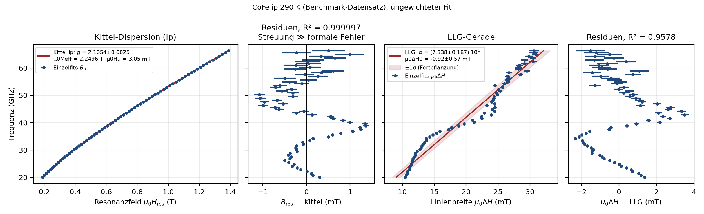

PolderFit – Breitband-FMR-Auswertung¶
Version 2.1 · Stand 2026-09-04
Name und Version: pyproject.toml ([tool.polderfit] name, [project] version) → Anzeige PolderFit V<Version> (polderfit.PROGRAMMNAME).
Zweck: TDMS-Messdaten (bbFMR) → je Frequenz Resonanzfeld B_res und Linienbreite µ0ΔH (mit 1σ) → Kittel/LLG → g, µ0M_eff, µ0H_u, α, µ0ΔH_0.
Konventionen
| Größe | Einheit / Regel |
|---|---|
| Felder | immer µ0H in T |
| γ | g·µ_B/ħ in rad s⁻¹ T⁻¹ (g = 2 → 1,7588·10¹¹) |
µ0ΔH |
FWHM der Absorption χ″ (nicht von |χ|: Faktor √3) |
| Plots | x = Feld, y = Frequenz |
*_err |
1σ aus der Fit-Kovarianz |
Auswertekette
| Schritt | Modul |
|---|---|
| 1 Laden + Kanal-Mapping | io/tdms_laden.py, io/kanal_mapping.py |
| 2 AutoWindow (Fenster je Frequenz) | fit/autowindows.py |
| 3 Beschnitt | fit/autowindows.py: schneide_band |
4 Einzelfit (LM) + Nachfenster B_res ± 2,5·ΔH; mehrere Dips je Fenster/Korridor: Abschälen → Summenfit mit Segment-Schranken (optional BIC) |
fit/linescan_fit.py, fit/batch.py, fit/korridor.py |
| 5 Bewertung (a)–(h) + Nutzer-Bewertung | fit/kriterien.py, fit/linescan_fit.py |
| 6 Kittel/LLG | physik/kittel_llg.py, auswertung/uebersicht.py |
| Export, Projekt, Einstellungen, Auto-Sicherung | persistenz/ |
| Farben nach DIN EN 60073 | gui/farben.py |

Nachschlagen: Schnellreferenz. Vergleich mit dem LabVIEW-FTF: benchmark_ftf/einfacher_vergleich_2026-08-25/VERGLEICH_EINFACH.md (einfach: PolderFit minus FTF je Frequenz, eigener Ordner) und benchmark_ftf/BERICHT.md (ausführlich).